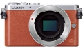
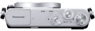

器材库 > APS及其以下画幅可换镜头数码相机 > DMC-GM

规格总览
产品类型
M4/3画幅可换镜头数码相机
北美地区型号
DMC-GM1
发布日期
2013-10-17
影像规格
影像传感器
Live MOS
总像素
1684万
有效像素
1600万
静态图像尺寸
〔4:3〕 4592×3448(L), 3232×2424(M), 2272×1704(S), 1824×1368〔3:2〕4592×3064(L), 3232×2160(M), 2272×1520(S), 1824×1216〔16:9〕4592×2584(L), 3232×1824(M), 1920×1080(S), 1824×1024〔1:1〕3424×3424(L), 2416×2416(M), 1712×1712(S), 1712×1712
静态图像格式
JPEG, RAW, MPO+JPEG
画幅比
3:2, 4:3, 16:9, 1:1
短片尺寸
〔AVCHD〕HD1920×1080（60i/30p/24p）, 1280×720（60p）〔MP4〕1920×1080 (30fps), 1280×720 (30fps), 640×480 (30fps)
短片格式
AVCHD, MP4
除尘系统
超声波滤镜（SSWF超声波除尘滤镜）
镜头和对焦
镜头卡口
Micro 4/3
对焦系统类型
TTL对比检测自动对焦系统
对焦模式
AFS / AFF / AFC / MF
手动对焦
支持
曝光控制
测光模式
中央重点测光, 多分区评价测光, 点测光
测光范围
0EV~18EV
曝光模式
P（程序自动曝光）, 场景选择, A（光圈优先自动曝光）, S（快门速度优先自动曝光）, M（手动测光曝光）, 艺术滤镜, 用户模式, 智能自动, 智能自动 plus（iA+）, 创意短片
快门类型
电子控制焦平面快门
快门速度
静态图像：60~1/16000秒，动态图像：1/25~1/16000秒
曝光补偿
±5EV以1/3EV级调整
自动曝光锁
有
自动包围曝光
以1/3、2/3或1EV为步长，最大±3EV，拍摄张数 3/5/7、单拍/连拍可选
ISO感光度
200, 400, 800, 1600, 3200, 6400, 12800, 自动, 智能ISO, 125, 25600
白平衡
日光, 白炽灯, 闪光灯, 色温调节, 阴天, 阴影, 自动, 白平衡包围
自拍
10秒, 2秒, 10秒, 3张
连拍
5张/秒
闪光灯
内置闪光灯
弹出式
闪光模式
自动, 减轻/消除红眼, 强制闪光, 关闭, 减轻红眼慢速同步, 自动+红眼减轻
闪光指数
5.6（ISO 200, m）
闪光补偿
±2EV以1/3EV级调整
取景器/显示屏
LCD尺寸
3.0英寸
LCD像素
104万
视野率
100%
LCD特性
触摸屏
文件输入/输出
存储卡
SD/SDHC, SDXC
数据接口
USB2.0
视频/音频接口
AV 输出, Micro HDMI 输出
无线功能
Wi-Fi
电源
电池
7.2V充电电池
续航能力
可拍摄约230张静态图像
外接电源
AC适配器DMW-AC8（另售）
机身规格
颜色
黑色, 橙色, 银/黑色, 米白色
尺寸
98.5×54.9×30.4mm
重量
仅机身约173g
其它
工作温度
0~40℃
工作湿度
10~80%
附件
充电电池, 电池充电器, USB线缆, CD-ROM光盘, 肩带, 镜头盖
kanon2014-11-05 22:214.13 分
操作性 3.50功能性 4.00美观性 4.50趣味性 4.50耐用性 4.00性价比 4.50解像力 4.50色彩还原 3.50
京华烟云2014-10-25 09:134.31 分
操作性 4.00功能性 5.00美观性 4.50趣味性 4.00耐用性 4.00性价比 4.00解像力 4.50色彩还原 4.50
产品图 / 样片
DMC-GM

DMC-GM
评测 / 相关文章
- 详细内容 （存档）
- 小有可为 松下DMC-GM1无反相机评测 （存档）
- ［试用］GF1, GF5, GX1, GX7, GM1 我的M4/3旅程 （存档）
- ［试用］松下GM1走起的轻松旅行生活 （存档）
- ［资讯］松下发布Leica 15/1.7及GM1套机 （存档）
- ［试用］我爱我的小玩具：松下GM1 （存档）
- ［试用］和GM1一起旅行 （存档）
- ［试用］GM1手柄入手，无忌首发 （存档）
- ［试用］GM1入手，恶搞小微和小胖的结合 （存档）
- ［试用］橙色版松下GM1开箱 （存档）
- ［试用］海外简评：松下DMC-GM初体验 （存档）